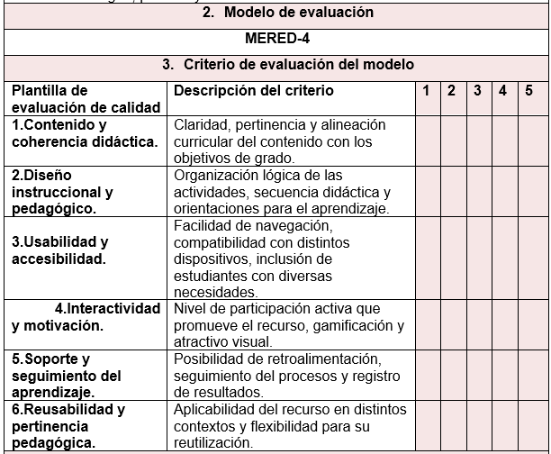

Introducción
Los modelos de evaluación son herramientas importantes para medir y calificar la eficacia y la confiabilidad de un recurso Educativo Digital, ya que esta determina por varios criterios propios de la necesidad requerida.
Por esta razón, en el presente trabajo se realizó el rediseño de un modelo de evaluación de calidad, teniendo como referente otros modelos tales como: SCREB-SCORE, REEVES y COdA, ya que ofrecen un marco de referencia valioso, prácticos y pedagógicos que son importantes para incluir en un modelo complementario que permite evaluar funciones de la estructura y contenidos.
En este sentido, el modelo MERED-4 se convierte en un instrumento de apoyo fundamental para avanzar hacia una educación más inclusiva, dinámica y acorde con los retos de la era digital.
Problema y Justificación
La incorporación de Recursos Educativos Digitales (RE) en la enseñanza de la Lengua Castellana en Educación Básica, específicamente en el grado cuarto se ha convertido en una estrategia indispensable para fortalecer el aprendizaje y responder a los desafíos de la sociedad digital. Plataformas como Classroom y herramientas interactivas como Educaplay han demostrado gran potencial en la organización de contenidos, la motivación de los estudiantes y la promoción de aprendizajes mas dinámicos. Sin embargo, su eficacia depende de que los docentes cuenten con instrumentos confiables que permitan evaluar de manera objetiva su pertinencia y calidad.
Problemática
-
Falta de integridad:
- Los modelos actuales no evalúan todos los aspectos relevantes de u RED, como su impacto en el aprendizaje de los estudiantes.
-
Complejidad en la aplicación de modelos existentes.
- El modelo SREB-SCORE es muy amplio y detallado, lo que dificulta su uso práctico en evaluaciones rápidas de aula.
- Los docentes de primaria requieren instrumentos más simples y directos.
-
Ausencia de rúbricas clara en algunos modelos.
- El modelo REEVES, aunque es valioso en lo pedagógico y comunicativo, no ofrece una rubrica estandarizada que facilite la aplicación por parte de los docentes.
-
Enfoque parcial de algunos modelos.
- El modelo CODA privilegia aspectos técnicos como la usabilidad, accesibilidad y reusabilidad, pero deja en segundo plano la alineación curricular, la motivación y el impacto pedagógico.
-
Falta de contextualización:
- Los modelos actuales no siempre tienen en cuenta el contexto educativo especifico en el que se utiliza el RED.
-
Limitaciones en los RED usados en el aula.
-
Recursos como
Google Classroom y Educaplay quieren evaluarse
en función de su pertinencia curricular, facilidad de usos,
motivación e inclusión, aspecto que no quedan completamente
cubiertos con un solo modelo.
Frente a esta situación, se hace relevante el rediseño de un modelo de evaluación híbrido, que integre los aportes más significativos de los referentes estudiados, pero que a la vez sea sencillo de aplicar, con criterios claros y una escala estandarizada que oriente la toma de decisiones. El rediseño no solo busca facilitar la labor docente, sino también asegurar que los recursos digitales utilizados en el aula realmente contribuyan al logro de los objetivos curriculares, favorezcan la motivación y apoyen la inclusión educativa.
De este modo, el modelo rediseñado se convierte en una herramienta fundamental para mejorar la calidad educativa, optimizar el uzo de las TIC garantizar que la incorporación de RED responda a las necesidades reales de los estudiantes en su proceso de aprendizaje.
-
Recursos como
Google Classroom y Educaplay quieren evaluarse
en función de su pertinencia curricular, facilidad de usos,
motivación e inclusión, aspecto que no quedan completamente
cubiertos con un solo modelo.
Objetivos
-
Diseñar un modelo rediseñado de evaluación de Recursos Educativos
Digitales (RED), integrando criterios pedagógicos, técnicos y
comunicacionales a partir de los referentes SCREB-SCORE, REEVES y
CODA, para valorar de manera integral la calidad, pertinencia y
efectividad de los RED.
- Analizar los aportes ilimitados de los modelos de evaluación SCREB-SCORE, REEVES y CODA, mediante una revisión comparativa, para fundamentar la construcción del modelo rediseñado.
- Seleccionar criterios de evaluación pertinentes, combinando aspectos pedagógicos técnicos y comunicacionales, con el fin de elaborar un instrumento integral y contextualizado en el aula.
- Diseñar una rubrica híbrida con indicadores claros y una escala de valoración de 1 a 5, para facilitar la aplicación del modelo rediseñado por parte de los docentes.
- Aplicar el modelo rediseñado en la evaluación de los recursos digitales Google Classroom y Educaplay, para validar su pertinencia y utilidad en la enseñanza.
- Interpretar los resultados obtenidos en la aplicación del modelo rediseñado, para identificar fortalezas y oportunidades de mejora en los recursos evaluados
Marco Conceptual
Identifique conceptos asociados al modelo de evaluación a rediseñar
que sirvan de referente en el rediseño del modelo de evaluación de
RED.
El rediseño del modelo de evaluación de Recursos Educativos Digitales
(RED) se fundamenta en la integración de tres modelos de referencia
ampliamente reconocidos en el campo de la evaluación de la calidad de
materiales educativos digitales:
REEVES, SREB-SCORE y CODA.
Estos modelos proporcionan conceptos, dimensiones y criterios que
permiten estructurar un modelo pertinente, integral y aplicable en el
contexto educativo.
-
Modelos referentes.
- Modelo SREB-SCORE: Propuesto por el Southern Regional Education Board (2001), establece estándares para la calidad de cursos y materiales digitales. Se centra en aspectos como contenido, diseño instruccional, tecnología, soporte y evaluación del aprendizaje . Su principal aporte es ofrecer un marco integral de criterios, aunque su aplicación resulta extensa y compleja en contextos de educación básica.
- Modelo REEVES:Presentado por Thomas Reeves (1997), este modelo organiza la evaluación en torno a dimensiones pedagógicas, sociales y técnicas . Evalúa la efectividad, motivación, usabilidad y utilidad educativa de los recursos digitales. Su fortaleza es el enfoque pedagógico, aunque carece de un instrumento estandarizado que facilite la aplicación práctica en el aula.
- Modelos CODA: Diseñado por la Universidad de los Andes (2007), valora principalmente aspectos técnicos y de accesibilidad , como la reusabilidad, usabilidad, interoperabilidad y pertinencia . Se destaca por su practicidad en lo técnico, aunque se queda corto en la valoración pedagógica y comunicativa.
Conceptos asociados al rediseño
- Usabilidad y accesibilidad: facilidad de uso del recurso en distintos dispositivos y condiciones, incluyendo criterios de inclusión.
- Diseño instruccional: organización de contenidos y actividades que favorecen el aprendizaje.
- Pertinencia pedagógica: alineación del RED con los objetivos curriculares y las necesidades de los estudiantes.
- Interactividad y motivación: grado en que el recurso promueve la participación activa y el interés de los estudiantes.
- Reusabilidad: posibilidad de aplicar el recurso en diferentes contestos y situaciones de aprendizaje.
Metodología
La metodología del modelo de evaluación de Recursos Educativos Digitales (RED) rediseñado se fundamenta en la integración de los aportes de los modelos REEVES, SREB-SCORE y CODA , los cuales ofrecen criterios complementarios para garantizar una valoración integral.
-
Selección del Recurso Educativo Digital (RED):
- Identificación de los recursos a evaluar (en este caso, Google Classroom y Educaplay), considerando el nivel educativo, el área de conocimiento y los objetivos de aprendizaje.
-
Definición de criterios de evaluación:
-
A partir de los modelos seleccionados se adoptan y reorganizan los
siguientes criterios:
- REEVES: eficacia pedagógica, motivación, claridad didáctica.
- SREB-SCORE: pertinencia curricular, accesibilidad, facilidad de uso.
- CODA: diseño, interactividad, usabilidad, reusabilidad.
-
Construcción del instrumento de evaluación:
- Se elabora una rúbrica que integra los criterios mencionados, organizados en dimensiones (pedagógica, técnica y comunicacional). Cada criterio se valora en una escala de 1 a 5, donde 1 corresponde a un nivel insuficiente y 5 a un nivel excelente.
-
Aplicación del instrumento:
- Los evaluadores (docentes y estudiantes) aplican la rúbrica al RED en un entorno real de uso, registrando los puntajes y observaciones cualitativas en cada criterio.
-
Análisis de resultados:
- Se calculan promedios y se contrastan con las valoraciones cualitativas. Este análisis permite identificar fortalezas, debilidades y oportunidades de mejora en cada recurso educativo digital.
-
Retroalimentación y mejora continua.
- Los resultados se utilizan para retroalimentar a los docentes y diseñadores, promoviendo el rediseño de los recursos y su adaptación a las necesidades del contexto educativo.
El proceso metodológico se desarrolla en las siguientes fases.
Esta metodología asegura una evaluación integral y efectiva de los Recursos Educativos Digitales, facilitando la toma de decisiones informadas para para mejorar el proceso de enseñanza y aprendizaje en el contexto educativos.
Métrica o Escala de Valoración
Para el diseño del instrumento de evaluación se emplea una escala de tipo Likert de 5 niveles, que permite valorar de manera gradual el cumplimiento de cada criterio de evaluación definido en el modelo rediseñado. Esta escala se selecciona por su facilidad de aplicación, claridad en la interpretación y pertinencia en procesos de evaluación educativa.
Escala de valoración.
La escala de valoración puede variar en detalle según las necesidades específicas del curso y los objetivos de aprendizaje. Una escala comúnmente utilizada en la escala de calificaciones de cinco puntos, aquí se presenta una escala detallada de cinco niveles que es tanto manejable como informativa.
Justificación de la Métrica
- Permite valorar cualitativa y cuantitativamente el desempeño de los RED.
- Es flexible y de fácil comprensión para docentes y estudiantes.
- Favorece la comparación entre diferentes recursos digitales, estableciendo fortalezas y oportunidades de mejora.
- Se ajusta a los criterios de evaluación propuestos en el rediseño, ya que cada uno puede ser medido con un rango progresivo de desempeño.
De esta manera, la escala de 1 a 5 facilita la construcción de una rúbrica práctica, clara y objetiva, garantizando que la evaluación de los Recursos Educativos Digitales sea integral y coherente con las necesidades del contexto escolar.
Instrumento de Evaluación Rediseñado
El instrumento de evaluación diseñado para valorar Recursos Educativos Digitales (RED) integra criterios pedagógicos, técnicos y comunicacionales provenientes de los modelos REEVES, SREB-SCORE y CODA, adaptados a las necesidades de la educación básica.
